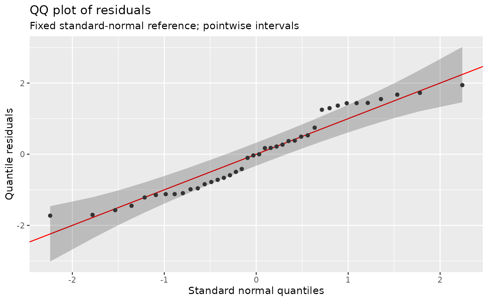

Extend diagnostics for an mgcv-compatible family
Source:R/family-diagnostics.R
family_diagnostics.RdA family can supply a gratia_diagnostics function to describe its response
distribution without adding family-name checks to gratia. The function is
called with named arguments mu, wt, scale, y and eta. These contain
response parameters, weights, fitted scale, the fitting response and linear
predictors, respectively. Diagnostics use fitted parameters and sampling
weights; log_lik() uses draw-specific parameters and likelihood weights.
Missing fitting rows have been removed;
grouped families receive only their own rows. eta can be NULL when a
distribution is constructed without a fitted model.
Details
Return a named list. Omitted fields retain gratia's existing family defaults;
an explicit NULL removes an optional function or moment. Existing $rd,
$cdf and $qf functions are preserved and supplied with their usual mgcv
arguments. Replacement functions in the returned list instead capture fitted
parameters and use the following interface:
mean,variance: numeric response moments, one per observation. A matrix is allowed for multiple response columns. Use the full response expectation, rather than a location parameter or a component mean.cdf,cdf_left: functions(q, log_p = FALSE, lower_tail = TRUE)forP(Y <= q)andP(Y < q), respectively. They must support both tails and logarithms. For an upper tail,cdf_leftreturnsP(Y >= q).qf: a function(p, log_p = FALSE, lower_tail = TRUE)for quantiles.rd: a function with no arguments that draws a complete response vector (or response matrix), retaining any dependence between observations.log_lik: a function(y)returning one normalised log density or log probability mass per observation, including fitting weights. A response vector contributes one value; a multivariate response contributes one joint value per row.log_lik()calls the factory at each coefficient draw with likelihood weights, which can differ from diagnostic sampling weights. Parameters represented bymuandetavary with that draw; the hook must exclude smoothing penalties and priors. Finite positive log densities and-Inffor impossible observations are allowed; missing values andInfare invalid.bounds: a function(y)returning a list with numericlowerandupperresponse bounds. Censoring intervals use their endpoints. Exact count observations can usey - 1andy. Alternatively, supplycdf_left: gratia then randomises betweenP(Y < y)andP(Y <= y)automatically. A bounds list may also supplycdf_lowerandcdf_upper, functions(log_p = FALSE, lower_tail = TRUE)that evaluate its endpoint probabilities, andleft_limit, a logical vector marking rows to randomise at equal bounds.continuous: set toTRUEto declare that responses have no probability masses. An unfamiliar grouped-family component must supplybounds,cdf_left, or this declaration before using PIT/quantile residuals.diagnostic_residuals: a function(y, type)for observed and reference deviance, response and Pearson residuals. Otherwise the family's existing residual method is used.observe: a function(y)applying an observation process, such as known censoring thresholds, to generated responses before traditional QQ/worm reference residuals are calculated. Return the response encoding expected by the family's residual method. This function is not applied to fitting observations or to the public response and posterior samplers.reference_available,reference_reason: a single logical value and an explanation. Set availability toFALSEwhen traditional distribution-based references cannot be generated, for example when censoring thresholds are unknown. Analytic PIT/quantile plots remain available.mean_available,variance_available,moment_reason: single logical values specifying whether the population moments exist, and an explanation used when a requested residual requires an undefined moment.independent,joint_available,dependence_reason: single logical values describing independence and availability of joint response draws, and an explanation of dependence.joint_availablerequires anrdfunction.approximation: an optional explanation shown in diagnostic subtitles.
Functions must return one value per response in fitting order. Probabilities must be valid and lower bounds must not exceed upper bounds. gratia validates supplied values and reports errors instead of silently using another method. The factory is called again for each prepared distribution; avoid changing the family or drawing random numbers in the factory itself.
Adding this function does not extend a family's supported fitting methods. Posterior predictive sampling still uses the fitting package's parameter and response sampling methods. The likelihood hook also operates at supplied coefficient draws.
Examples
load_mgcv()
f <- poisson()
f$gratia_diagnostics <- function(mu, wt, scale, y, eta) {
list(mean = mu, variance = mu,
cdf_left = function(q, log_p = FALSE, lower_tail = TRUE) {
ppois(ceiling(q) - 1, lambda = mu,
log.p = log_p, lower.tail = lower_tail)
})
}
dat <- data.frame(x = seq(0, 1, length.out = 40))
dat$y <- rep(c(0, 1, 2, 4), 10)
f$rd <- function(mu, wt, scale) rpois(length(mu), mu)
f$qf <- function(p, mu, wt, scale) qpois(p, mu)
f$cdf <- function(q, mu, wt, scale) ppois(q, mu)
fit <- gam(y ~ x, data = dat, family = f, method = "REML")
qq_plot(fit, type = "quantile", seed = 1)
